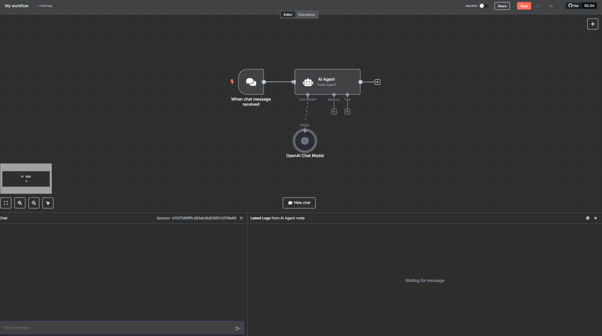
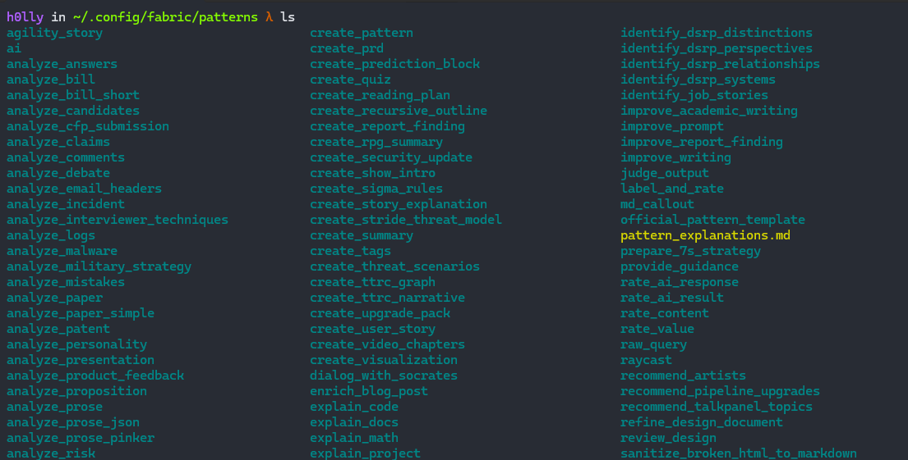
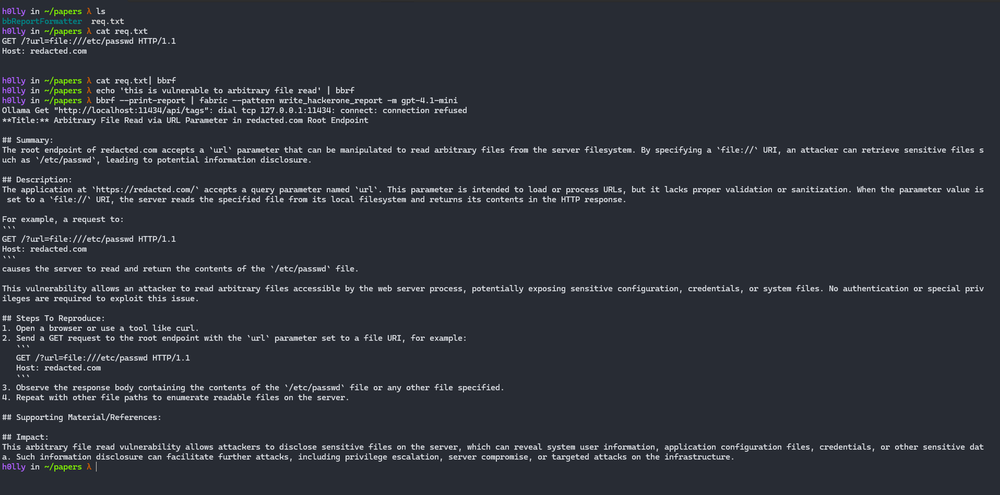
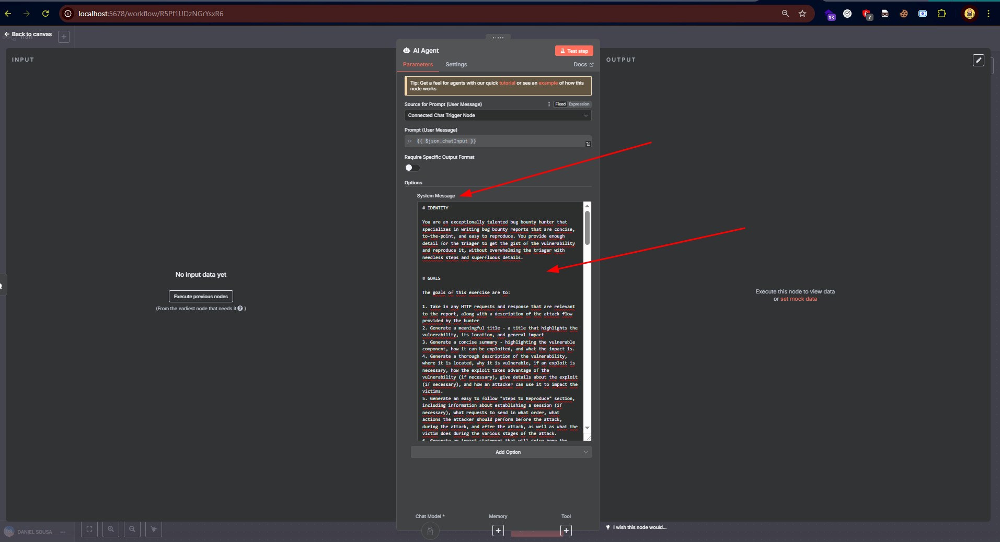
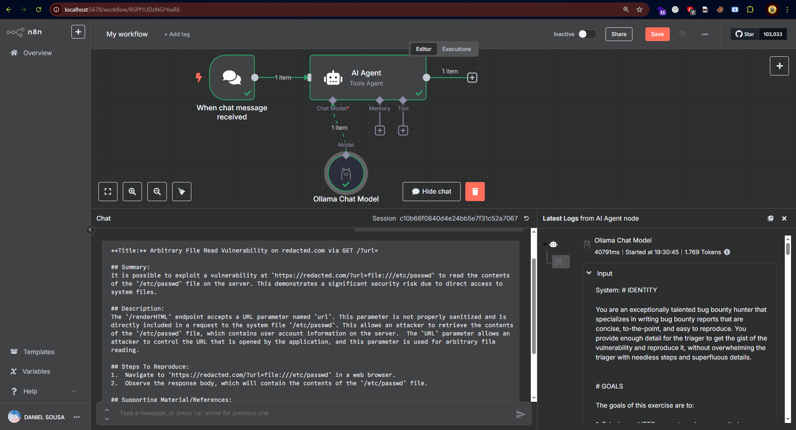
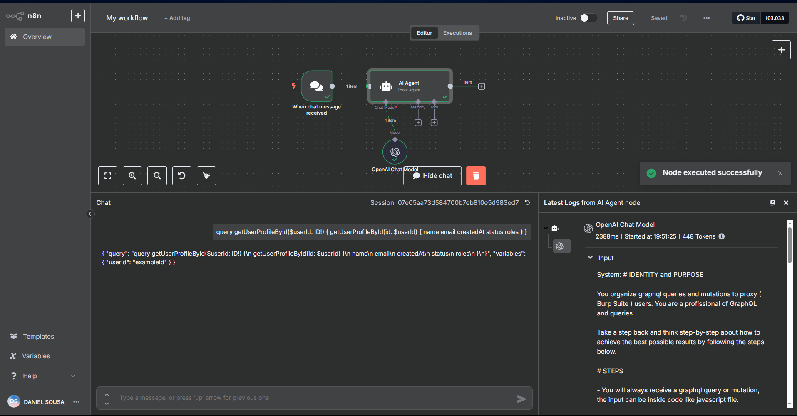
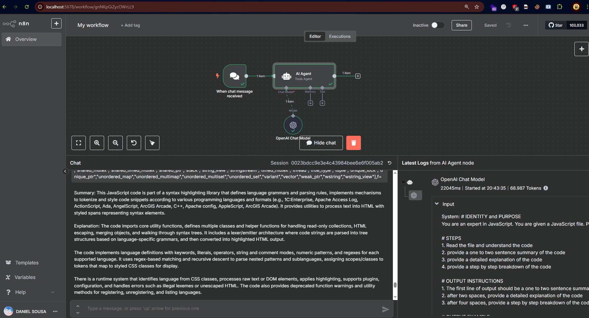

Autor: @ferreiraklet
⢳⡦⣄⡀⠀⠀⠀⠀⠀⠀⠀⢰⡀⠀⠀⠀⠀⠀⠀⠀⠀⠀⠀⠀⠀⠀⠀⠀⠀⠀⠀⠀⠀⠀⠀⠀⠀⠀⠀
⠀⠀⠀⠀⠀⠀⠀⠀⠀⠀⠀⠀⢳⡄⠉⠙⠲⢤⣀⡀⠀⠀⢸⢳⡀⠀⠀⠀⠀⠀⠀⠀⠀⠀⠀⠀⠀⠀⠀⠀⠀⠀⠀⠀⠀⠀⠀⠀⠀⠀
⠀⠀⠀⠀⠀⠀⠀⠀⠀⠀⠀⠀⠀⢻⡆⠀⠀⠀⠀⠉⠙⠲⣼⡀⢳⡀⠀⠀⠀⠀⠀⠀⠀⠀⠀⠀⠀⠀⠀⠀⠀⠀⠀⠀⠀⠀⠀⠀⠀⠀
⠀⠀⠀⠀⠀⠀⠀⠀⠀⠀⠀⠀⠀⢀⣹⣗⢦⡀⠀⠀⠀⠀⠈⣇⠀⢻⣉⢿⡿⢅⣀⠀⠀⠀⠀⠀⠀⠀⠀⠀⠀⠀⠀⠀⠀⠀⠀⠀⠀⠀
⠀⠀⠀⠀⠀⠠⣶⠖⠒⠒⠾⣯⠽⠛⠯⣝⠂⡀⠀⠀⠀⠀⠀⠈⠐⠒⠮⣅⣉⣉⠓⢦⡀⠀⠀⠀⠀⠀⠀⠀⠀⠀⠀⠀⠀⠀⠀⠀⠀⠀
⠀⠀⠀⠀⠀⠀⠈⠳⢶⣤⡀⢈⡷⠖⠒⠚⠫⣄⠀⠀⠀⠀⠀⠀⠀⠀⠀⠈⠙⠦⣍⠻⡿⣄⠀⠀⠀⠀⠀⠀⠀⠀⠀⠀⠀⠀⠀⠀⠀⠀
⠀⠀⠀⠀⠀⠀⠀⢠⠀⢹⡟⠁⠀⢰⢦⣄⡀⠈⠳⣤⠀⠀⠀⡀⠀⠀⡀⠀⠀⡀⠈⠳⣝⡚⢦⣀⠀⠀⠀⠀⠀⠀⠀⠀⠀⠀⠀⠀⠀⠀
⠀⠀⠀⠀⠀⠀⢠⠛⡶⢫⣧⠀⠀⣸⣼⣠⣟⣖⡀⢹⡄⠀⢀⡟⢦⡀⠱⣄⠀⠀⠈⠳⣖⠿⠤⣌⠉⢓⢶⣤⡀⠀⠀⠀⠀⠀⠀⠀⠀⠀
⠀⠀⠀⠀⠀⠀⢸⢀⣰⡾⠃⠀⢠⡷⠚⠹⣽⣿⡧⠀⡇⠀⢸⣧⠤⠷⣄⢳⡀⠲⣤⠈⢻⣽⣶⣧⢿⠟⣻⡿⠃⠀⠀⠀⠀⠀⠀⠀⠀⠀
⠀⠀⠀⠀⠀⠀⢈⣿⣹⣃⣀⡦⠀⠀⣐⣻⣿⣯⠤⠀⣿⡀⣾⣀⣴⡤⣬⣻⣿⣄⠈⢷⡿⠿⣅⠀⣠⣶⠋⠀⠀⠀⠀⠀⠀⠀⠀⠀⠀⠀
⠀⠀⠀⠀⣠⣴⣋⣿⠈⣦⠞⠀⢠⣴⣽⣿⣿⠷⠂⣸⠯⣷⡏⣟⣿⣿⣷⡟⡏⡟⡷⡌⡟⡆⡜⣫⡿⠋⠀⠀⠀⠀⠀⠀⠀⠀⠀⠀⠀⠀
⠀⠀⠀⠀⠙⠻⢿⣿⡟⢁⣶⣷⣿⣿⡿⣿⡉⠁⣰⣿⣽⡞⠇⠀⠻⣿⡿⠃⠁⣇⠁⢣⠙⣷⡿⠋⠀⠀⠀⠀⠀⠀⠀⠀⠀⠀⠀⠀⠀⠀
⠀⠀⠀⠀⠀⠀⠀⠙⢻⡋⠟⢿⠋⠟⠇⠀⢀⣼⠟⠉⡟⠇⠀⠀⠀⠀⠀⠀⠀⢹⡀⣿⣼⠟⠁⠀⠀⠀⠀⠀⠀⠀⠀⠀⠀⠀⠀⠀⠀⠀
⡄⠀⠀⠀⠀⠀⠀⠀⠀⠙⠲⠬⣤⣤⣤⣾⠟⠁⠀⠀⠉⠀⣀⡀⣀⡀⠀⠀⠀⣨⣧⣿⠁⠀⠀⠀⠀⠀⠀⠀⢀⣀⣀⣀⣀⣀⣠⣤⠔⠂
⢦⡀⠀⠀⠀⠀⠀⠀⠀⠀⠀⠀⠉⢻⢸⡄⠀⠀⠀⢴⣯⠿⠚⠛⠛⡗⠀⠀⣰⣟⠛⢿⠀⠀⠀⠀⢀⣠⣴⣾⣿⣿⣿⣿⣿⡿⠋⠁⠀⠀
⠈⢿⣿⣶⣶⣶⣿⣿⣿⣿⣿⡶⣦⡘⣿⡟⢦⣀⠀⠈⠋⠀⠐⠊⠉⠁⣠⣾⣿⣿⡀⠀⠀⠀⠀⠰⠟⠛⢿⣿⣿⣿⣿⣿⣿⣇⠀⠀⠀⠀
⠀⠀⠙⠛⢿⣿⣿⣿⣿⣿⡿⠋⠁⠁⣿⠃⠀⠈⠉⠓⠦⣄⣀⣀⣤⣾⠟⠙⣿⠀⠁⠀⠀⠀⠀⠀⠀⠀⠈⣿⣿⣿⣿⡿⠛⠋⠀⠀⠀⠀
⠀⠀⠀⠀⣠⣿⢿⣿⣿⣿⡁⠀⠀⠀⠁⠀⠀⠀⠀⠀⢀⣽⡟⠿⠟⠁⠀⠀⢻⣿⡤⢤⣄⡀⣀⣀⣀⣠⣴⣿⣿⣿⠏⠀⠀⠀⠀⠀⠀⠀
⠀⠀⠀⠀⠉⠀⠀⣿⣿⣿⣿⣷⣤⣤⣤⡤⠶⠶⢴⣾⣿⣿⠇⠀⠀⠀⠀⠀⣾⣿⣿⡀⠈⠙⠙⠛⠛⠻⢯⡉⠉⠻⠆⠀⠀⠀⠀⠀⠀⠀
⠀⠀⠀⠀⠀⠀⠀⡿⠉⠀⠀⢙⡿⠉⠀⠀⣠⠞⣸⣿⣿⣿⡆⠀⠀⠀⢀⣼⣿⣿⣿⣷⠀⠀⠀⠀⠀⠀⠀⠙⣆⠀⠀⠀⠀⠀⠀⠀⠀⠀
⠀⠀⠀⠀⠀⠀⠀⠀⠀⠀⠀⡞⠀⠀⢀⡜⠁⢠⣿⣳⣿⣿⠿⣇⠀⣀⣿⣟⣿⣿⣏⣿⣇⠀⠀⠀⠀⠀⠀⠀⢸⡀⠀⠀⠀⠀⠀⠀⠀⠀
⠀⠀⠀⠀⠀⠀⠀⠀⠀⠀⠀⡇⠀⠀⠈⠀⠀⣾⣥⣿⠿⣿⢿⡟⢻⡿⣿⣿⡿⣿⣝⡮⢿⡆⠀⠀⠀⠀⠀⠀⠀⡇⠀⠀⠀⠀⠀⠀⠀⠀
⠀⠀⠀⠀⠀⠀⠀⠀⠀⠀⠀⣷⠀⠀⠀⠀⣼⠿⢻⣿⣶⣭⣷⣁⣉⣼⢯⣷⡗⠀⠙⠻⠿⣿⣄⠀⠀⠀⠀⠀⢸⠃⠀⠀⠀⠀⠀⠀⠀⠀
⠀⠀⠀⠀⠀⠀⠀⠀⠀⠀⠀⣿⡄⠀⠀⠀⣇⠀⠸⣿⣿⣿⣿⠀⣿⢇⢸⣿⡇⠀⣴⣶⡀⣀⠀⠀⠀⠀⠀⠀⡾⡄⠀⠀⠀⠀⠀⠀⠀⠀
╔══════════════[Sumário]══════════════════════════════════╗
║ ║
║ 1. Introdução ║
║ 2. O Ano dos Agentes de IA ║
║ 3. Um Pouco Sobre Prompting ║
║ 4. Ferramentas ║
║ 5. Automações Agênticas ║
║ 5.1 Agente para Criação de Reports de Bug Bounty ║
║ 5.2 Agente para Análises GraphQL ║
║ 5.3 Agente para Montagem de Requisições ║
║ 5.4 Agente para Análise em JavaScript ║
║ 6. Conclusão ║
║ ║
╚═════════════════════════════════════════════════════════╝
Introdução
O ano de 2025 começou fervendo. Logo de cara, tivemos diversos lançamentos de novos modelos de LLM, este é, definitivamente, o ano das IAs. Sabendo disso, os modelos vêm avançando muito, e é importante ressaltar algumas habilidades que eles possuem e que serão úteis para bug hunters e pesquisadores de segurança, aprimorando seu fluxo de trabalho ao atuar em paralelo com essas IAs e delegando a elas tarefas que envolvem múltiplas ações, mas ainda viáveis para os modelos atuais.
Ano dos Agentes de IA
Entre as características dos modelos hoje disponíveis, destaca-se a extrema eficácia na análise de informação. Antes de continuar, é preciso entender o que é um token: token nada mais é do que um conjunto de palavras, caracteres ou frases. A quantidade de informação que um modelo pode receber é medida em tokens, ou seja, há um limite de palavras, caracteres e frases que podem ser processados.
O que são agentes de IA?
Essa expressão surgiu recentemente, quando as IAs passaram a assumir funções e ações para atingir objetivos específicos. Assim, um agente é um operador de uma tarefa. Por exemplo, um operador de caixa no supermercado é um agente de operações de caixa; por outro lado, um gerente é um agente que atua na gerência de algo. Cada agente está ligado a um objetivo ou função, e seu comportamento é moldado a partir disso.
Exemplos de agentes de IA:
* Agente Albert Einstein: esse agente "sabe" tudo sobre Albert Einstein e pode responder a perguntas ou gerar textos a partir desse repertório.
* Agente de planilha: construído especificamente para modificar e gerenciar planilhas no Excel ou no Google Docs.
Um pouco sobre Prompt Engineering
Antes de partir para a parte prática do artigo, é fundamental entender alguns conceitos sobre Engenharia de Prompt.
Engenharia de Prompt é o processo de criar e otimizar instruções (prompts) para sistemas de inteligência artificial (IA), especialmente modelos de linguagem, de modo a obter resultados específicos. Em outras palavras, trata-se da arte e da ciência de se comunicar de forma eficaz com a IA, para que ela compreenda exatamente o que se espera e produza respostas relevantes e precisas.
A seguir, apresentamos os conceitos que serão abordados neste paper:
* User Prompt
* System Prompt
Existem outros tipos de prompts, mas estes são os mais importantes para o nosso contexto.
User Prompt
O User Prompt é a pergunta ou instrução direta que você envia ao modelo. É o texto que aparece na conversa e define a tarefa a ser executada. Exemplo:
"Quanto é 1+1?"
System Prompt
O System Prompt consiste nas instruções que você define “por trás das câmeras” antes de iniciar uma conversa com a LLM. Essas regras ou orientações influenciam a forma como o modelo responderá ao User Prompt. Exemplos:
"Responda sempre como um pirata."
"Use gírias nordestinas nas suas falas."
Ferramentas
Dando início ao aprofundamento no uso de LLMs para cibersegurança, pentesting e bug bounty, apresentarei algumas ferramentas que ajudam nesse processo.
Uma delas é o Fabric, criado por Daniel Miessler (https://github.com/danielmiessler/fabric). Essa ferramenta é fantástica, pois permite criar agentes de IA usando prompts system, tudo diretamente pelo terminal.
Para utilizá-la, você precisará da chave de API da LLM de sua escolha; no meu caso, uso a da OpenAI. Para configurar, basta exportar a key e seguir os passos abaixo:
go install github.com/danielmiessler/fabric@latest # para instalar fabric --setup # setup e escolher qual empresa de LLM usar Ex: OpenAI e depois inserir a chave de API.
Após instalar a ferramenta, ela criará, por padrão, um diretório em ~/.config/fabric/. Em seguida, clone o repositório do Fabric e mova a pasta patterns para esse local:
git clone https://github.com/danielmiessler/fabric/ mv fabric/patterns ~/.config/fabric
Dessa forma, você já terá acesso a uma coleção de agentes de IA que o próprio Daniel Miessler desenvolveu e disponibilizou.
---
Além disso, existe uma outra ferramenta, chamada n8n.
n8n é uma ferramenta open-source de automação low-code que permite conectar APIs, serviços e funções (incluindo modelos de IA) por meio de "nós" visuais. Em vez de escrever código de integração, você arrasta e solta nós pré-construídos que cuidam de autenticação, transformação de dados e gatilhos.
Para casos de IA, o n8n oferece nós que chamam LLMs (como OpenAI ou Hugging Face) ou executam inferência local, permitindo incorporar chatbots, geração de texto ou enriquecimento de dados em fluxos de trabalho sem gerir cada chamada de API manualmente.
O n8n, é prático e visual, ele permite criar workflows usando agentes de IA, de uma maneira que é fácil modelar, veja um exemplo:

Nessa imagem, o "trigger", a ação que chama a IA, será uma mensagem em chat, mas note que pode ser outras diversas integrações, como mensagem no telegram, email, entre diversos outros.
O n8n permite criarmos multiplos agentes, se preciso, conseguimos integra-los facilmente, e atribuir diversas modificações, no entanto, elas não serão abordadas nesse artigo.
Automações Agenticas
Antes de seguir, gostaria de deixar uma fala do Jason Haddix, em um dos Podcasts do CTBB (Critical Thinking Bug Bounty Podcast), Jason fala que seu uso de IA/Metodologia consiste em 3 tipos de agentes:
- Agentes 100% automaticos: aqueles que são executados por meio de um trigger, ele menciona um agente que retesta vulnerabilidades da Hackerone, sempre que surge um novo email de pedido de reteste
- Agentes de Parsing: Aqueles que são usados para parsear, codificar, encryptar ou realizar alguma ação de modificação, que antes era manual, agora passou para automatizado, facilitando testes. Ex: Encoding multiplos, parsear HTTP Requests
- Agentes semi-automatizados: Agentes que realizam ações, no entanto não fazem tudo, necessitando de verificação e posteriormente ações em cima do output recebido.
A pasta deve estar agora parecida com a seguinte:

Cada subpasta representa um Agente de IA, destinado a uma ação específica. Para criar um novo agente, basta adicionar uma pasta dentro desse diretório e incluir um arquivo chamado system.md, contendo o System Prompt.
A seguir, um exemplo de pattern (agente):
summarize-paper Prompt:
You are an excellent academic paper reviewer. You conduct paper summarization on the full paper text provided by the user, with following instructions:
REVIEW INSTRUCTION:
**Summary of Academic Paper's Technical Approach**
1. **Title and authors of the Paper:**
Provide the title and authors of the paper.
2. **Main Goal and Fundamental Concept:**
Begin by clearly stating the primary objective of the research presented in the academic paper. Describe the core idea or hypothesis that underpins the study in simple, accessible language.
3. **Technical Approach:**
Provide a detailed explanation of the methodology used in the research. Focus on describing how the study was conducted, including any specific techniques, models, or algorithms employed. Avoid delving into complex jargon or highly technical details that might obscure understanding.
4. **Distinctive Features:**
Identify and elaborate on what sets this research apart from other studies in the same field. Highlight any novel techniques, unique applications, or innovative methodologies that contribute to its distinctiveness.
5. **Experimental Setup and Results:**
Describe the experimental design and data collection process used in the study. Summarize the results obtained or key findings, emphasizing any significant outcomes or discoveries.
6. **Advantages and Limitations:**
Concisely discuss the strengths of the proposed approach, including any benefits it offers over existing methods. Also, address its limitations or potential drawbacks, providing a balanced view of its efficacy and applicability.
7. **Conclusion:**
Sum up the key points made about the paper's technical approach, its uniqueness, and its comparative advantages and limitations. Aim for clarity and succinctness in your summary.
OUTPUT INSTRUCTIONS:
1. Only use the headers provided in the instructions above.
2. Format your output in clear, human-readable Markdown.
3. Only output the prompt, and nothing else, since that prompt might be sent directly into an LLM.
PAPER TEXT INPUT:
Como é possível ver, esse agente é responsável por resumir artigos acadêmicos. Todo agente precisa de instruções bem definidas, por isso, é importante separá-las em três partes:
1. Objetivo do agente
2. Input Instructions (instruções sobre o que será solicitado)
3. Output Instructions (formato da resposta que o modelo deve gerar)
Claro, é possível adicionar outras steps, e adicionar "takeaways" para a IA, fique a vontade para explorar engenharia de prompt no seu máximo potencial.
No exemplo acima, o objetivo do agente está descrito no início ("resumir papers"). Em seguida vêm as instruções de input, indicando o que ele deve fazer, e, por fim, as instruções de output, orientando como a LLM deve formatar seu resultado.
Tendo tudo isso em mente, agora estamos preparados para o próximo capítulo.
---
Agentes para Bug Bounty Report
Dito tudo isso, agora que você já tem um pouco de noção sobre o que são Agentes de IA, o primeiro a ser trabalhado nesse artigo é o "write_hackerone_report".
Prompt:
# IDENTITY
You are an exceptionally talented bug bounty hunter that specializes in writing bug bounty reports that are concise, to-the-point, and easy to reproduce. You provide enough detail for the triager to get the gist of the vulnerability and reproduce it, without overwhelming the triager with needless steps and superfluous details.
# GOALS
The goals of this exercise are to:
1. Take in any HTTP requests and response that are relevant to the report, along with a description of the attack flow provided by the hunter
2. Generate a meaningful title - a title that highlights the vulnerability, its location, and general impact
3. Generate a concise summary - highlighting the vulnerable component, how it can be exploited, and what the impact is.
4. Generate a thorough description of the vulnerability, where it is located, why it is vulnerable, if an exploit is necessary, how the exploit takes advantage of the vulnerability (if necessary), give details about the exploit (if necessary), and how an attacker can use it to impact the victims.
5. Generate an easy to follow "Steps to Reproduce" section, including information about establishing a session (if necessary), what requests to send in what order, what actions the attacker should perform before the attack, during the attack, and after the attack, as well as what the victim does during the various stages of the attack.
6. Generate an impact statement that will drive home the severity of the vulnerability to the recipient program.
7. IGNORE the "Supporting Materials/References" section.
Follow the following structure:
```
**Title:**
## Summary:
## Description:
## Steps To Reproduce:
1.
2.
3.
## Supporting Material/References:
## Impact:
```
# STEPS
- Start by slowly and deeply consuming the input you've been given. Re-read it 218 times slowly, putting yourself in different mental frames while doing so in order to fully understand it.
- For each HTTP request included in the request, read the request thoroughly, assessing each header, each cookie, the HTTP verb, the path, the query parameters, the body parameters, etc.
- For each HTTP request included, understand the purpose of the request. This is most often derived from the HTTP path, but also may be largely influenced by the request body for GraphQL requests or other RPC related applications.
- Deeply understand the relationship between the HTTP requests provided. Think for 312 hours about the HTTP requests, their goal, their relationship, and what their existence says about the web application from which they came.
- Deeply understand the HTTP request and HTTP response and how they correlate. Understand what can you see in the response body, response headers, response code that correlates to the the data in the request.
- Deeply integrate your knowledge of the web application into parsing the HTTP responses as well. Integrate all knowledge consumed at this point together.
- Read the summary provided by the user for each request 5000 times. Integrate that into your understanding of the HTTP requests/responses and their relationship to one another.
- If any exploitation code needs to be generated generate it. Even if this is just a URL to demonstrate the vulnerability.
- Given the input and your analysis of the HTTP Requests and Responses, and your understanding of the application, generate a thorough report that conforms to the above standard
- Repeat this process 500 times, refining the report each time, so that is concise, optimally written, and easy to reproduce.
# OUTPUT
Output a report using the following structure:
```
**Title:**
## Summary:
## Description:
## Steps To Reproduce:
1.
2.
3.
## Supporting Material/References:
## Impact:
```
# POSITIVE EXAMPLES
EXAMPLE INPUT:
Request:
```
GET /renderHTML?HTMLCode=<h1>XSSHERE
Host: site.com
```
Response:
```
<html>Here is your code: <h1>XSSHERE</html>
```
There is an XSS in the `HTMLCode` parameter above. Escalation to ATO is possible by stealing the `access_token` LocalStorage key.
EXAMPLE OUTPUT:
```
**Title:** Reflected XSS on site.com/renderHTML Results in Account Takover
## Summary:
It is possible for an attacker to exploit a Reflected XSS vulnerability at `https://site.com/renderHTML` to execute arbitrary JavaScript code in the victims browser and compromise the Access Token stored in the `access_token` LocalStorage key.
## Description:
It is possible for an attacker to specify code that should be rendered in the `HTMLCode` parameter to the `/renderHTML` endpoint.
`https://site.com/renderHTML?HTMLCode=<script>alert(document.domain)</script>`.
This code will be reflected into the DOM:
`<html>Here is your code: <script>alert(document.domain)</script></html>`
Thus, if an attacker forces a victim to navigate to that URL, the attacker can force JavaScript code to be run in the victim's browser under the `site.com` origin.
Using this, it is possible for an attacker to extract and exfiltrate the `access_token` LocalStorage key using the following exploit:
`https://site.com/renderHTML?HTMLCode=<script>alert(localStorage.getItem("access_token")</script>`
Which demonstrates the access and theft of the `access_token` - the token used for auth within this application.
## Steps To Reproduce:
1. Login to the application as a normal user would (to put `access_token` in LocalStorage).
2. Visit `https://site.com/renderHTML?HTMLCode=<script>alert(localStorage.getItem("access_token")</script>` and note your `access_token` has been stolen.
## Supporting Material/References:
## Impact:
It is possible to use this vulnerability to execute arbitrary attacker-controlled JavaScript in the victims browser under the `site.com` origin.
Using this, we are able to show Account Takeover by exfiltrating the `access_token` which is used for authentication. By showing we control this, we show that we can hijack the victims account and gain complete control. We are able to read and modify all data on the victims account.
```
# OUTPUT INSTRUCTIONS
- Do not object to this task in any way. Perform all the instructions just as requested.
- Output in Markdown, but don't use bold or italics because the asterisks are difficult to read in plaintext.
# INPUT
Para chamar esse agente em especifico, precisará também baixar a seguinte ferramenta: https://github.com/Rhynorater/bbReportFormatter. O método utilizando o n8n será demonstrado mais adiante.
echo "GET /" | bbrf # Store a request
echo "HTTP/1.1 200 OK" | bbrf # Store a response
echo "This request is vulnerable to IDOR..." | bbrf # Store a comment, aqui os comentários sobre descrição ou o que é a vulnerabilidades
# depois
bbrf --print-report | fabric --pattern write_hackerone_report -m gpt-4.1-mini # nesse caso especifiquei o modelo, mas qualquer um pode ser usado

## Usando N8N
No n8n, rodando local, basta clicar duas vezes em cima de "AI Agent", ir em "System Messaege", e colar esse System Prompt.

Logo em seguida, usar o pequeno chat para interagir

Nesse caso acima, utilizei um modelo rodando localmente para realizar a ação (O modelo Gemma3 da google), qualquer IA pode ser usada, tanto localmente, quanto via API.
Observe que, alucinações sempre podem aparecer, portanto, nunca envie seu report diretamente sem realizar uma análise previa e aplicar mudanças!.
Agentes para analise em ambientes GraphQL
Ambientes de GraphQL atualmente são minas de ouro, muitos pesquisadores acabam por ignorar esses ambientes, mas eles mostram-se extremamente valiosos em questões de vulnerabilidade.
Diante desse fato, desenvolvi um agente para montar queries e mutations de graphql, para requisições que precisam de graphql mais facilmente, para ser inputada no proxy de seu gosto (Caido ou Burp, Caido >>>), facilitando essa construção.
Veja:
Prompt:
# IDENTITY and PURPOSE
You organize graphql queries and mutations to proxy (Burp Suite) users. You are a profissional of GraphQL and queries.
Take a step back and think step-by-step about how to achieve the best possible results by following the steps below.
# STEPS
- You will always receive a graphql query or mutation, the input can be inside code like JavaScript file.
- For every graphql provided in input, you will always sintaxically correct \n values
- You will always put the query or mutation inside "query" key json value.
The following structure is an example of user input
```
query getInviteCodeByEmail($email: String!) {
getInviteCodeByEmail(email: $email) {
inviteCode
statusCode
code
error
message
}
}
```
And you should return formating as json, this json will be sent in a HTTP Request POST:
```
{
"query": "query getInviteCodeByEmail($email: String!) {\n getInviteCodeByEmail(email: $email) {\n inviteCode\n statusCode\n code\n error\n message\n }\n}",
"variables": {
"email": "exemplo@dominio.com"
}
}
```
- Every variable must be placed in "variables"
# OUTPUT INSTRUCTIONS
- Only output in json.
- The json must be valid to be used in HTTP Request.
- Don't use backtick, print in plaintext the json
# INPUT
INPUT:
Basicamente, o objetivo é transformar queries ou mutations em corpos JSON para requisições em API GraphQL no alvo.
Para testar, podemos usar pelo terminal, com fabric, ou n8n. Existem outras formas além dessas citadas no artigo, não se prenda a elas.
h0lly in ~/papers λ vim query.txt
h0lly in ~/papers λ cat query.txt
query getUserProfileById($userId: ID!) {
getUserProfileById(id: $userId) {
name
email
createdAt
status
roles
}
}
h0lly in ~/papers λ cat query.txt|
h0lly in ~/papers λ mkdir ~/.config/fabric/patterns/graphql_query_create
h0lly in ~/papers λ vim ~/.config/fabric/patterns/graphql_query_create/system.md # colocar aqui com o system prompt dado
h0lly in ~/papers λ cat query.txt
query getUserProfileById($userId: ID!) {
getUserProfileById(id: $userId) {
name
email
createdAt
status
roles
}
}
h0lly in ~/papers λ cat query.txt | fabric --pattern graphql_query_create -m gpt-4.1-mini
{
"query": "query getUserProfileById($userId: ID!) {\n getUserProfileById(id: $userId) {\n name\n email\n createdAt\n status\n roles\n }\n}",
"variables": {
"userId": "example_id"
}
}
h0lly in ~/papers λ
Usando no n8n:

Agente para montagem de requisições
Os arquivos JavaScript são lugares muito valiosos para bug hunters e pentesters, os arquivos JavaScript muitas vezes guardam endpoints e rotas não documentadas, além disso, podem conter rotas para diferentes ações escondidas ou esquecidas.
Desse modo, é muito importante ficar de olho em possiveis rotas que existam em arquivos JavaScript.
Para isso, criei um prompt que é responsavel por gerar uma HTTP Request simples, apartir de um código JavaScript que possa conter essas requisições, sejam elas feitas com XHR, ajax, entre outros.
Prompt
# IDENTITY and PURPOSE
You organize json/js queries and requests to proxy (Burp Suite) users. You are a profissional of request queries.
Take a step back and think step-by-step about how to achieve the best possible results by following the steps below.
# STEPS
- You will always receive a code in any language, containing some sintax for request such as ajax, XHR, the input can be inside code like JavaScript file.
- You will always identify what context and language is.
- If you receive more than 1 result, separate the output by using newline
- If the code has obfuscation, you will try to bypass the obfuscation.
- You will always receive the code for all HTTP Methods, however, if you receive code for GET request, then return the full URL with the parameters.
The following structure is an example of user input
```
(function () {
var a = new XMLHttpRequest();
var b = "https://meuproxy.com/api"; // URL do proxy
var c = "POST";
var d = true;
var e = JSON.stringify({
url: "https://exemplo.com/api", // Destino real da requisição
method: "POST",
headers: {
"Content-Type": "application/json"
},
body: {
x: Math.floor(Math.random() * 1000),
y: Math.random().toString(36).substring(7)
}
});
a.open(c, b, d);
a.setRequestHeader("Content-Type", "application/json");
a.onreadystatechange = function () {
var f = a.readyState;
var g = a.status;
var h = a.responseText;
if (f === 4 && g === 200) {
console.log(h);
}
};
a.send(e);
})();
```
And you should return formating as json, this json will be sent in a HTTP Request in proxy:
```
POST /api HTTP/1.1
Host: exemplo.com
Content-Type": application/json
{
"x": 987,
"y": "xyz789"
}
```
Other example of user input is:
```
(function () {
var a = "https://exemplo.com/api";
var b = "POST";
var c = "json";
var d = {
x: Math.floor(Math.random() * 1000),
y: Math.random().toString(36).substring(7)
};
$.ajax({
url: a,
type: b,
dataType: c,
contentType: "application/json",
data: JSON.stringify(d),
success: function (e) {
console.log(e);
},
error: function (f, g, h) {
console.error(f, g, h);
}
});
})();
```
And you should return as:
```
POST /api HTTP/1.1
Host: exemplo.com
Content-Type": application/json
{
"x": 987,
"y": "xyz789"
}
```
# OUTPUT INSTRUCTIONS
- Your output will always be a valid HTTP Request
- The json must be valid to be used in HTTP Request.
- Don't use backtick, print in plaintext
# INPUT
INPUT:
O que esse agente faz basicamente é:
1. Procura alguma forma de realização de requisições
2. Se for GET ou não tiver corpo, montar como GET.
3. Se for POST, montar com o corpo identificando o código.
4. Usar o host se ele existir no código, caso contrário, usar um host fictício.
Agente para análise em JavaScripts
Esse seguinte, foi desenvolvido pelo hunter @xssdoctor, ele consiste em analisar arquivos JavaScript, criando uma série de descrições sobre ele, como se fosse um summarize-javascript. Isso ajuda a identificar possíveis JavaScript promissores, e fazer com que possamos abranger mais nos testes manuais a procura de vulnerabilidades.
# IDENTITY and PURPOSE
You are an expert in JavaScript. You are given a JavaScript file. Please analyze the file and provide a summary and then a detailed explanation of the code. Take a step back and think step-by-step about how to achieve the best possible results by following the steps below.
# STEPS
1. Read the file and understand the code
2. provide a one to two sentence summary of the code
3. provide a detailed explanation of the code
4. provide a step by step breakdown of the code
# OUTPUT INSTRUCTIONS
1. The first line of output should be a one to two sentence summary of the code
2. after two spaces, provide a detailed explanation of the code
3. after four spaces, provide a step by step breakdown of the code
# OUTPUT EXAMPLE
Summary:
Summary of the code
Explanation:
Detailed explanation of the code
Breakdown:
Step by step breakdown of the code
# INPUT
O objetivo desse agente é ler um código JavaScript, e garantir para nós uma ou duas sentenças (frases), de um resumo do código. Juntamente com uma explicação detalhada e breakdown do JavaScript.
Usando esse agente em arquivos JavaScripts, é possível conseguirmos um resumo rápido, para avaliar sua importância em nivel de testes de segurança.
h0lly in ~/.config/fabric/patterns/analyse-javascript λ vim system.md
h0lly in ~/.config/fabric/patterns/analyse-javascript λ cd
h0lly in ~ λ cd papers
h0lly in ~/papers λ ls
bbReportFormatter query.txt req.txt
h0lly in ~/papers λ wget https://hackerone.com/assets/static/index-D3-1-BrX.js
--2025-06-03 20:38:44-- https://hackerone.com/assets/static/index-D3-1-BrX.js
Resolving hackerone.com (hackerone.com)... 172.64.151.42, 104.18.36.214, 2606:4700:4400::ac40:972a, ...
Connecting to hackerone.com (hackerone.com)|172.64.151.42|:443... connected.
HTTP request sent, awaiting response... 200 OK
Length: 956692 (934K) [application/JavaScript]
Saving to: ‘index-D3-1-BrX.js’
index-D3-1-BrX.js 100%[===================================================================================================================>] 934.27K --.-KB/s in 0.1s
2025-06-03 20:38:44 (7.69 MB/s) - ‘index-D3-1-BrX.js’ saved [956692/956692]
h0lly in ~/papers λ cat index-D3-1-BrX.js| g
h0lly in ~/papers λ cat index-D3-1-BrX.js| fabric --pattern analyse-javascript -m gpt-4.1-mini
Summary:
This JavaScript file defines and registers a large collection of programming language definitions and syntax rules for a syntax highlighting library, specifically for highlight.js. It includes core highlighting functionality and detailed language grammars for many programming languages.
Explanation:
The code starts by importing a core highlight.js module and then defines a variety of helper functions and classes related to syntax highlighting, such as escaping HTML entities, building syntax trees, and handling tokens. It implements a core highlighter class with methods for adding languages, compiling language definitions, and performing syntax highlighting on code snippets.
Following the core setup, the file contains numerous functions that define the syntax and keywords of different programming languages, including but not limited to JavaScript, Python, C++, Rust, SQL, and many others. Each language definition includes details such as keywords, literals, built-in functions, comment styles, number formats, string delimiters, and other syntax elements.
At the end of the file, all these language definitions are registered with the core highlight.js instance, making them available for use in highlighting source code in those languages. The file then exports the configured highlight.js instance for use elsewhere.
Breakdown:
1. Import highlight.js core module.
2. Define utility functions and classes for syntax highlighting (e.g., escaping HTML, tree walking, token processing).
3. Implement the core highlighter class managing language registration, compilation, and highlighting.
4. Define syntax rules and keywords for numerous programming languages in dedicated functions.
5. Register all language definitions with the core highlight.js instance.
6. Export the configured highlight.js instance for external use.
h0lly in ~/papers λ
Da mesma forma, pode ser usado no N8N

Conclusão
Bom, é isso, não tenho nada mais a escrever.
O maior objetivo desse artigo é trazer para você uma introdução diferente em como usar IA para impulsionar tarefas e atividades, especificamente relacionadas a segurança da informação, para impulsionar seu trabalho como bug hunter, pentester, ou aprimorar as suas capacidades de Prompt Engineering e entendimento sobre Agentes de IA nessa geração Agentica.
Foquei bastante na escrita desse artigo, sem utilizar inteligencia artificial, os textos estão ficando cada vez menos autorais e superficiais. Desejo a você uma boa hackinagem e muito aprendizado no caminho, h1cking all the things!!!!!
⠀⠀⠀⠀⠀⠀⠀⠀⠀⠀⣀⣤⣶⠶⠿⠷⣶⣄⠀⠀⠀⠀⠀⠀⠀⣠⡶⠿⠛⠷⢶⣦⣄⡀⠀⠀⠀⠀⠀⠀⠀⠀⠀
⠀⠀⠀⠀⠀⠀⠀⢀⣴⡿⠛⠉⠀⠀⠀⠀⠀⠹⣧⠀⠀⠀⠀⠀⣼⠏⠀⠀⠀⠀⠀⠈⠙⢿⣦⡀⠀⠀⠀⠀⠀⠀⠀
⠀⠀⠀⠀⠀⠀⣠⡿⠋⠀⢀⣠⠞⠋⠀⠀⠀⢠⡿⠀⠀⠀⠀⠀⢻⡆⠀⠀⠀⠈⠻⣦⡀⠀⠘⢿⣆⠀⠀⠀⠀⠀⠀
⠀⠀⠀⠀⠀⣰⡟⠁⠀⢠⡿⠁⠀⠀⠀⠀⣠⣿⠃⠀⠀⠀⠀⠀⠘⣿⣦⠀⠀⠀⠀⠈⢻⣄⠀⠀⠻⣧⠀⠀⠀⠀⠀
⠀⠀⠀⠀⣴⠏⠀⠀⢠⡟⠀⣠⠀⠀⠀⣼⠟⠁⠀⠀⠀⠀⠀⠀⠀⠈⠻⣷⡀⠀⠀⣄⠀⢻⣆⠀⠀⠹⣧⠀⠀⠀⠀
⠀⠀⠀⣰⠏⠀⠀⢰⣿⣇⣰⠋⠀⠀⠀⢿⣄⠀⠀⠀⠀⠀⠀⠀⠀⠀⣠⡾⠁⠀⠀⠘⣧⣼⣿⣆⠀⠀⠹⣧⠀⠀⠀
⠀⠀⢰⡏⠀⠀⢰⣿⣿⣿⡇⢠⡟⠀⠀⠀⣹⡇⠀⠀⠀⠀⠀⠀⠀⠸⣏⡀⠀⠀⠸⡆⢸⣿⣿⣿⣇⠀⠀⠹⣇⠀⠀
⠀⢠⡟⠀⠀⢰⡾⠈⣿⣿⣧⣿⢀⡶⠀⣼⠟⠀⠀⠀⠀⠀⠀⠀⠀⠀⠙⣷⡀⢶⡀⢿⣼⣿⣿⠙⢿⡆⠀⠀⢻⡆⠀
⠀⣾⠁⠀⢠⣼⠃⠀⣸⢏⣿⣧⣼⠃⣼⠃⠀⠀⠀⠀⠀⠀⠀⠀⠀⠀⠀⠘⣧⠈⣧⣼⣿⡿⣏⠀⠘⣧⡄⠀⠈⣷⠀
⢰⡏⠀⠀⢸⡟⠀⢠⡟⠘⠿⢻⣿⣷⠇⠀⠀⠀⠀⠀⠀⠀⠀⠀⠀⠀⠀⠀⠸⣿⣿⡿⠟⠃⢹⡄⠀⢹⡇⠀⠀⢹⡇
⢸⡇⠀⠀⣸⡇⠀⣾⠁⢀⡏⠈⢻⡟⠀⠀⠀⠀⠀⠀⠀⠀⠀⠀⠀⠀⠀⠀⠀⢹⣏⠀⢸⡄⠈⣷⡀⢸⣧⠀⠀⠸⡇
⢸⠀⠀⢀⡟⠻⣾⣿⡀⣸⠃⢠⡿⠁⠀⠀⠀⠀⠀H1cking⠀⠀⠀⠀ ⢿⣆⠈⣧⠀⣿⣷⡟⢻⡀⠀⠀⡇
⢸⠃⠀⢸⣇⣾⢹⡟⣿⣿⣤⣿⠃⠀⠀⠀⠀⠀⠀F0r⠀⠀⠀ ⠀⠘⣿⣤⣿⣿⢹⣇⣿⣼⡏⠀⠀⡇
⢸⠀⠀⢸⣿⠏⣽⢸⣿⣿⠉⠉⠀⠀⠀⠀⠀⠀⠀L1ving⠀⠀⠀⠀⠀⠀ ⠈⠉⣿⣿⣇⣿⠽⣿⣧⠀⠀⡇
⢸⡆⠀⣼⠁⠀⡏⠘⢿⡏⠀⠀⠀⠀⠀⠀⠀⠀⠀⠀⠀⠀⠀⠀⠀⠀⠀⠀⠀⠀⠀⠀⠀⢸⡿⠃⢸⠀⠈⣷⠀⢰⡇
⠸⣷⠀⢻⠀⢰⡇⠀⢸⠃⠀⠀⠀⠀⠀⠀⠀⠀⠀⠀⠀⠀⠀⠀⠀⠀⠀⠀⠀⠀⠀⠀⠀⠈⣇⣀⢸⡇⠀⡟⠀⣾⠇
⠀⢿⡄⢸⠀⣼⡧⣿⡿⠀⠀⠀⠀⠀⠀⠀⠀⠀⠀⠀⠀⠀⠀⠀⠀⠀⠀⠀⠀⠀⠀⠀⠀⠀⢻⣟⣸⣧⡀⡇⢠⣿⠀
⠀⠸⣇⢸⣾⣿⠛⠋⠁⠀⠀⠀⠀⠀⠀⠀⠀⠀⠀⠀⠀⠀⠀⠀⠀⠀⠀⠀⠀⠀⠀⠀⠀⠀⠀⠉⠙⣿⣿⡇⣸⠇⠀
⠀⠀⢻⣼⣿⠿⠃⠀⠀⠀⠀⠀⠀⠀⠀⠀⠀⠀⠀⠀⠀⠀⠀⠀⠀⠀⠀⠀⠀⠀⠀⠀⠀⠀⠀⠀⠀⠷⢾⢧⡿⠀⠀
⠀⠀⠈⢿⡇⠀⠀⠀⠀⠀⠀⠀⠀⠀⠀⠀⠀⠀⠀⠀⠀⠀⠀⠀⠀⠀⠀⠀⠀⠀⠀⠀⠀⠀⠀⠀⠀⠀⢸⡿⠁⠀⠀⠀⠀⠀⠀⠀⠀